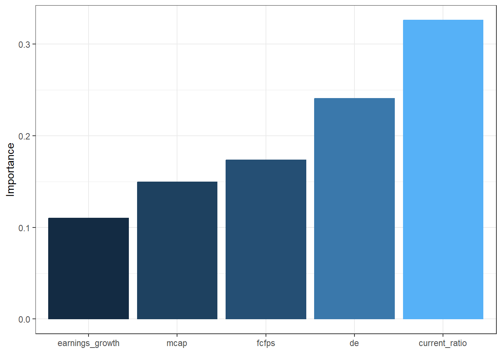

3 Exercise 2: Freedman data
In this exercise, we will look at a data set called "Freedman" from the car package. The "Freedman" data frame has 110 rows and 4 columns. The observations are U. S. metropolitan areas with 1968 populations of 250,000 or more.
QUESTION:
- Perform exploratory data analysis and if necessary, clean the data to prepare for hierarchical agglomerative clustering.
Check the variable type, which could inform which distance metrics to be used.
A quick way to check the data is by using the skim function:
| Name | data |
| Number of rows | 110 |
| Number of columns | 4 |
| _______________________ | |
| Column type frequency: | |
| numeric | 4 |
| ________________________ | |
| Group variables | None |
Variable type: numeric
| skim_variable | n_missing | complete_rate | mean | sd | p0 | p25 | p50 | p75 | p100 | hist |
|---|---|---|---|---|---|---|---|---|---|---|
| population | 10 | 0.91 | 1135.99 | 1560.14 | 270.0 | 398.75 | 664.0 | 1167.75 | 11551.0 | ▇▁▁▁▁ |
| nonwhite | 0 | 1.00 | 10.80 | 10.26 | 0.3 | 3.40 | 7.2 | 14.88 | 64.3 | ▇▂▁▁▁ |
| density | 10 | 0.91 | 765.67 | 1441.95 | 37.0 | 266.50 | 412.0 | 773.25 | 13087.0 | ▇▁▁▁▁ |
| crime | 0 | 1.00 | 2714.08 | 991.40 | 458.0 | 2066.75 | 2698.0 | 3305.00 | 5441.0 | ▂▆▇▃▁ |
From this output, we notice that this data set has some missing values. The simplest way to handle missing values is by removing all rows containing missing value:
There are more sophisticated methods for imputing missing values. However, we'll skip this as it is beyond the scope of the exercise.
In addition, we notice that the four variables in this data set have very different mean values and standard deviations. Therefore, a scaling operation should be performed.
- Perform HAC using three different linkage criteria. Produce the dendrograms and comment on the plots.
Below is a sample code; you should modify the arguments to change the linkage criteria.
# Dissimilarity matrix
d <- dist(data, method = "euclidean")
# Hierarchical clustering using Complete Linkage
hc1 <- hclust(d, method = "complete" )
# Plot the obtained dendrogram
plot(hc1, hang=0, cex=0.5)
To generate more beautiful dendrogram visualisations, check this article.
- Use the silhouette width to determine the optimal number of clusters.
We could either produce the silhouette plots for different number of clusters and then compare the silhoette width, or use the fviz_nbclust function from the factoextra package which generates a plot of silhouette width against the number of clusters.
First, let's try produce the silhouette plots for 2-5 clusters.
library(cluster); library(dendextend)
dend1 <- as.dendrogram(hc1, hang=0)
# Cut the dendrogram to create 2/3/4/5 clusters
allocations_2clusters <- cutree(dend1,k=2)
allocations_3clusters <- cutree(dend1,k=3)
allocations_4clusters <- cutree(dend1,k=4)
allocations_5clusters <- cutree(dend1,k=5)
# Plot the obtained dendrogram
plot(silhouette(allocations_2clusters,dist(data)),
col = c("black", "red"),
main="Silhouette plot (2 clusters)")
plot(silhouette(allocations_3clusters,dist(data)),
col = c("black", "red", "green"),
main="Silhouette plot (3 clusters)")
plot(silhouette(allocations_4clusters,dist(data)),
col = c("black", "red", "green", "blue"),
main="Silhouette plot (4 clusters)")
plot(silhouette(allocations_5clusters,dist(data)),
col = c("black", "red", "green", "blue","magenta"),
main="Silhouette plot (5 clusters)")
One thing we notice from the four plots is that the first cluster contains a large number of samples while the other clusters have very little samples. When splitting the dataset into more clusters, the newly added clusters have only 1 observations. Therefore, it seems sufficient to consider only two clusters.
Let's now try the fviz_nbclust function:
library(factoextra)
ggplot_fviz <-fviz_nbclust(data, FUN=hcut, method="silhouette", hc_method="complete")
ggplot_fviz
Similar to our previous finding, using two clusters gives the highest average silhouette width.